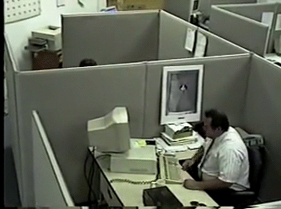

badday.mpg (1997)
You’ve probably seen it a hundred times… The footage was staged and filmed by the Colorado-based technology company Loronix to promote their digital video surveillance systems and was initially distributed via CD-ROM.
Source: Know Your Meme